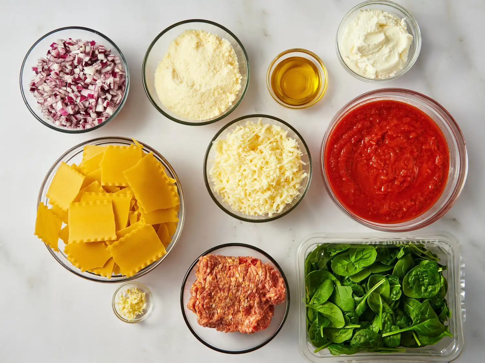
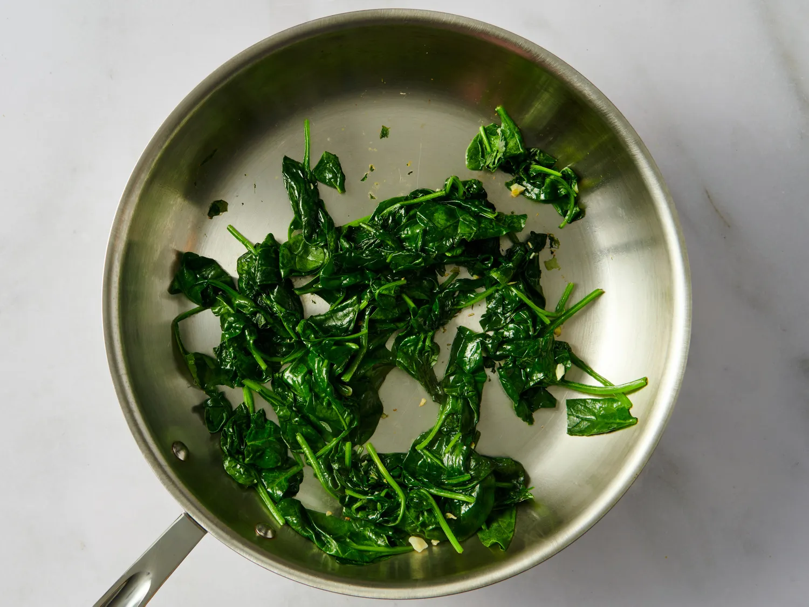
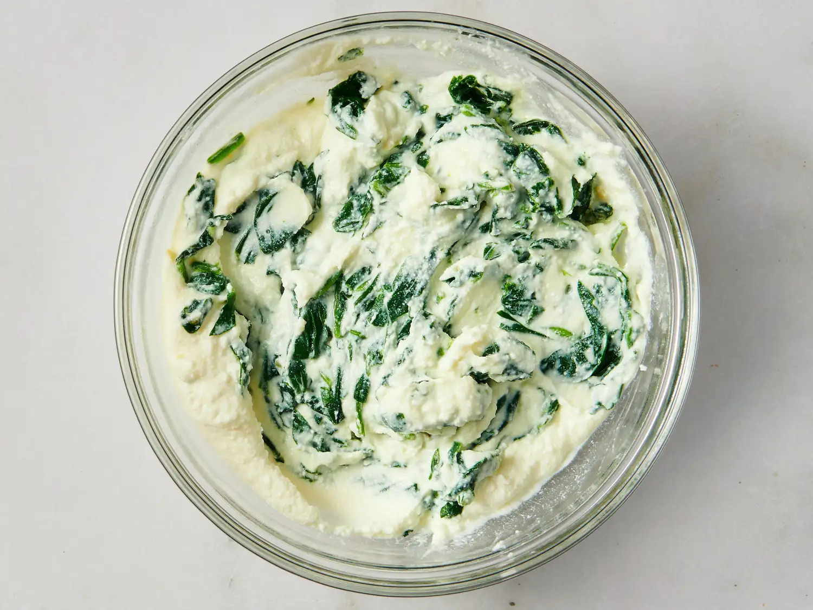
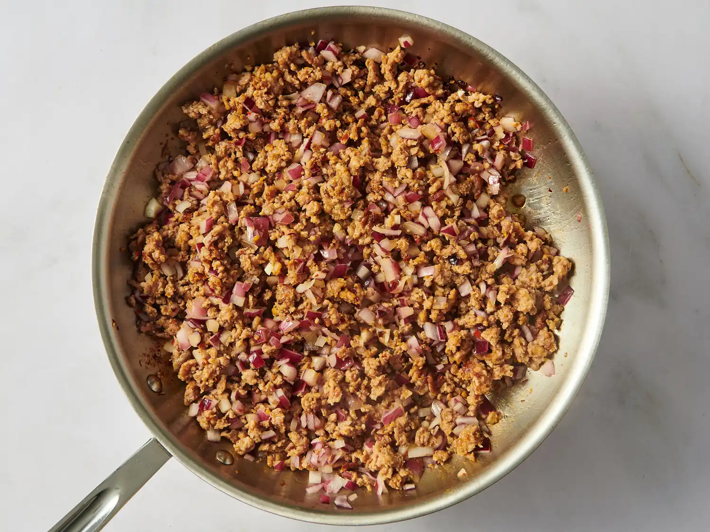
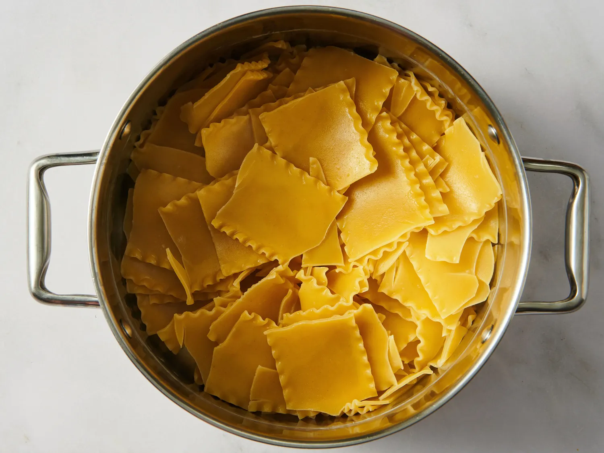
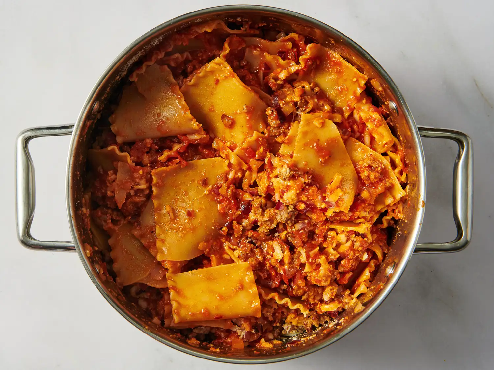
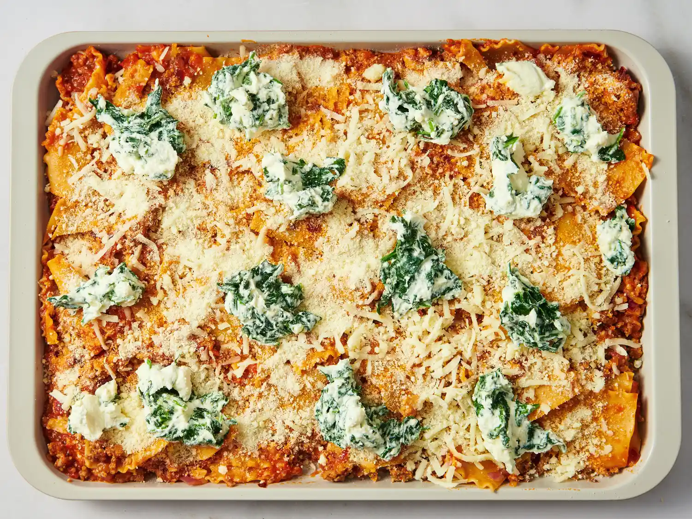
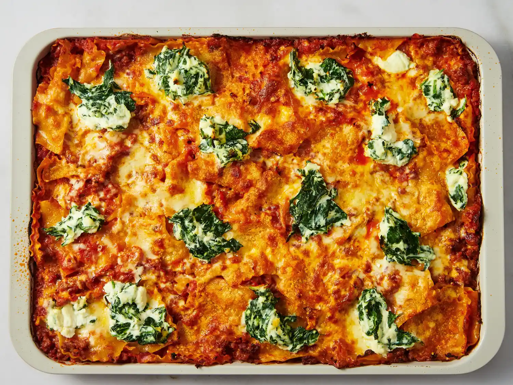
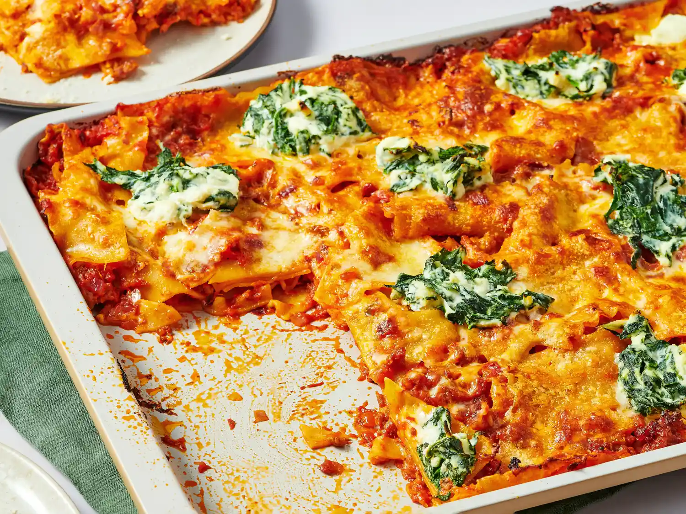

Sheet Pan Lasagna
This sheet pan lasagna saves the effort of layering and offers up more crispy edges, which we all know is the best part of lasagna. With sausage and a spinach-ricotta mixture, and cheese atop all, it's a fun way to make an old favorite.
- Prep Time
- 15 mins
- Cook Time
- 45 mins
- Total Time
- 60 mins
- Servings
- 4
Ingredients
- 4 tablespoons olive oil, or as needed
- 2 cloves garlic, minced, or more to taste
- 1 (5 ounce) container fresh spinach
- 1 cup ricotta cheese
- 1 pound spicy sausage, casings removed
- 1 small red onion, diced
- 1 pound lasagna, broken into 2-inch pieces
- 4 cups marinara sauce such as Rao's®
- 2 1/2 cups shredded low-moisture mozzarella cheese
- 1 1/2 cups grated Parmesan cheese
Directions
-
Gather all ingredients. Preheat the oven to 425 degrees F (220 degrees C). Grease a 12x17-inch baking sheet with 1 to 2 tablespoons olive oil for a thin, crisp sheet-pan version, or use a 9x13-inch baking dish for a cozier, “pasta bake” feel.

-
Heat 1 tablespoon olive oil in a frying pan over medium heat. Add garlic and sauté until fragrant, about 30 seconds. Add spinach and salt; cook, stirring, until wilted, about 3 minutes.

-
Transfer spinach to a bowl. Use kitchen shears to roughly chop, then stir in ricotta cheese. Set aside.

-
Wipe out the frying pan with a paper towel. Add remaining 2 tablespoons olive oil and sausage. Cook undisturbed for 1 to 2 minutes to get some browning, then break sausage apart with a spatula. Continue cooking until browned throughout, about 5 minutes. Add red onion and sauté until softened, about 3 minutes. Remove from heat.

-
Meanwhile, bring a large pot of salted water to a boil. Add lasagna sheets and cook for 4 minutes, stirring occasionally to prevent sticking. Drain and return to the pot. If you aren’t immediately mixing with the sauce mixture (next step), toss pasta in a drizzle of olive oil to prevent sticking.

-
Stir marinara sauce into sausage mixture. Pour sausage and sauce into the pot with pasta. Add 1 1/2 cups mozzarella and 1 cup Parmesan, stirring until evenly coated.

-
Spread pasta mixture evenly on the prepared baking sheet or in the baking dish. Sprinkle remaining cheese on top. Spoon or dollop the spinach-ricotta mixture across the surface.

-
Bake in the preheated oven, uncovered, until cheese is golden, sauce is bubbling, and edges are lightly crisped, about 30 minutes.

-
Serve warm with extra marinara sauce and a sprinkle of cheese, if desired. Enjoy!

Nutrition Facts
Per serving
- Calories
- 1290
- Fat
- 90 g
- Carbohydrates
- 48 g
- Protein
- 73 g